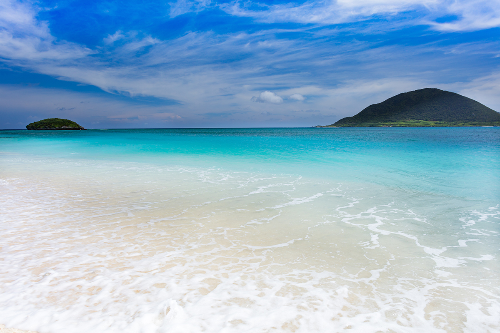
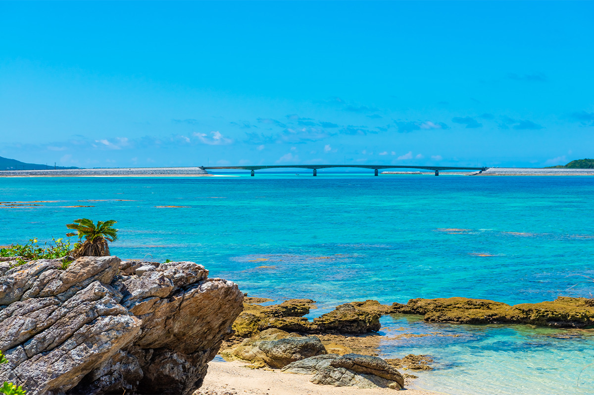
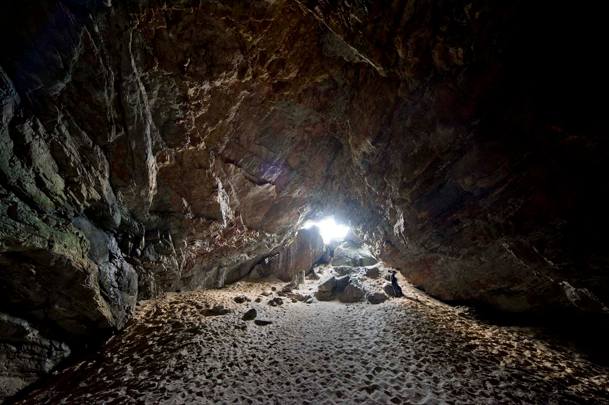
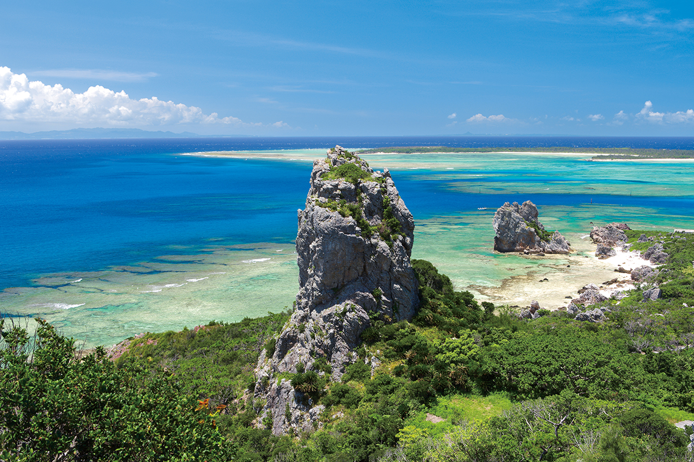
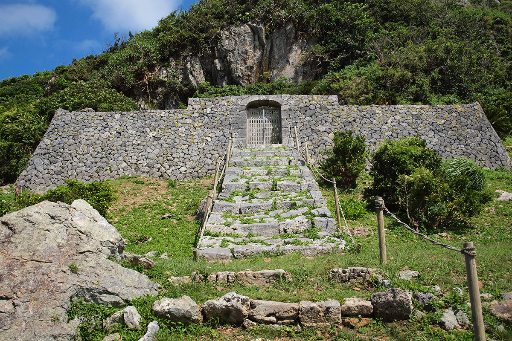
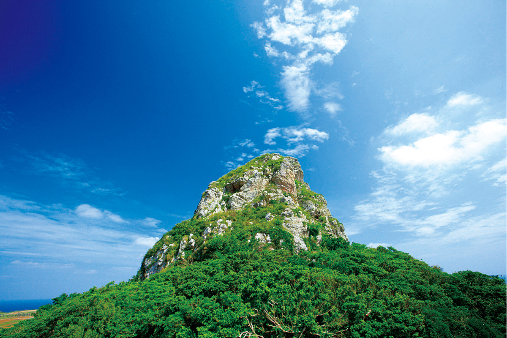
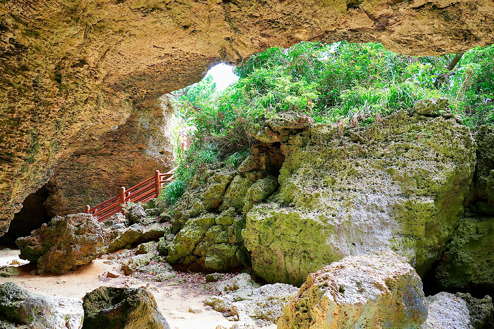
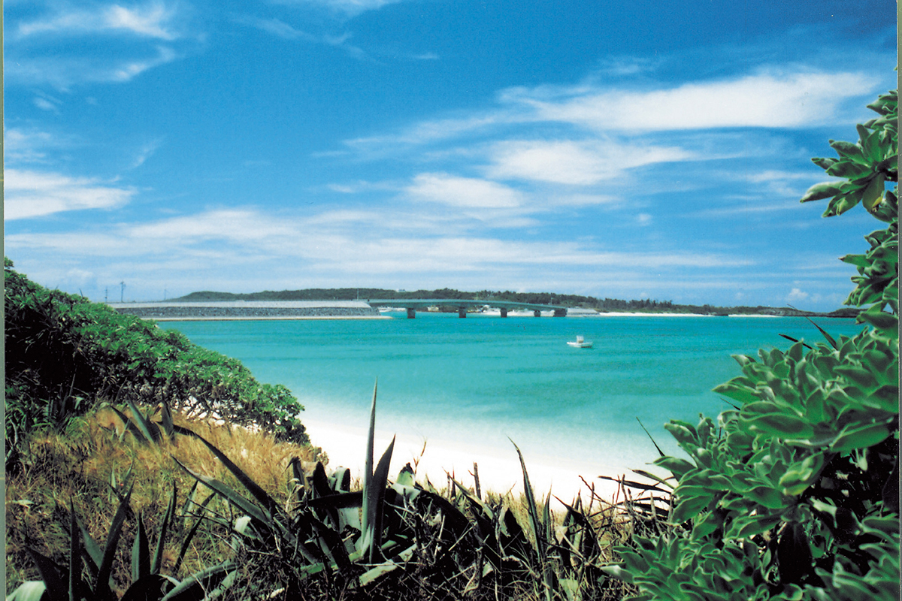
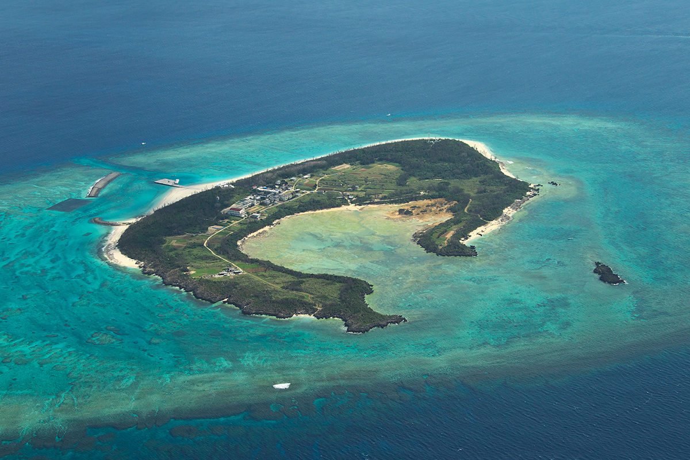

Префектура Окинава · Ихэя, Идзэна, Иэ, Нохо, Минна · острова
Острова к северу и западу от Мотобу: Ихэя, Идзэна, Иэ, Нохо и Минна

У северо-западного берега острова Окинава, за полуостровом Мотобу, лежат пять островов, до которых плывут от получаса до полутора часов. На одном родился король Рюкю, на другом весной цветёт миллион лилий, на третьем живут двадцать человек.
Ихэя
Белый песок и марафон под луной
В префектуре Окинава около 160 больших и малых островов, и на 37 из них, кроме самого острова Окинава, живут люди. Самый северный из нашей пятёрки это Ихэя. Его знают за прозрачное море и звёздное ночное небо.

На юге острова в море уходит узкая коса пляжа Ёнэдзаки. Песок на нём совсем белый и такой мягкий, что ноги в нём утопают. Сюда стоит прийти дважды: на рассвете и на закате.
Главное событие острова это «Ихэя Мунлайт марафон», ночной забег. Его называют первым в Японии официально признанным ночным марафоном, и каждый год на него приезжает много бегунов.

На севере Ихэи находится пещера Кумая, природный памятник префектуры. Её 280 миллионов лет вытачивали в осадочных породах волны и ветер. С пещерой связана легенда об Аматэрасу, богине солнца: когда та спряталась в пещере, мир погрузился во тьму. Кумаю называют самой южной точкой Японии, где рассказывают это предание.
Из местных продуктов на Ихэе стоит попробовать чёрный сахар, водоросли мозуку и авамори «Тэрусима». Из праздников здесь отмечают «Унджами», «Усидэку» и «Хатигацу асоби», праздник урожая в восьмом лунном месяце. Ещё одна достопримечательность «Ками-асиагэ» в Симадзири, место для обрядов.
Остров Ихэя
- Как добраться
- паром из порта Унтэн (остров Окинава), около 1 часа 20 минут. По острову: местный автобус, прокат автомобилей, мотоциклов и велосипедов
- Телефон
- +81 980-46-2526 (туристическая ассоциация Ихэи)
Идзэна
Родина короля Сё Эна

Идзэна лежит к югу от Ихэи, в часе пути от острова Окинава. Её любят за то, что здесь до сих пор видна старая Окинава. Вдоль улиц тянутся ограды из кораллового камня, когда-то обычные по всей Окинаве, и аллеи деревьев фукуги: их сажали, чтобы защитить дома от ветра и пожаров.
На острове можно обойти места, связанные с королевским домом. «Идзэна тамаудун» это каменная гробница, где покоятся родственники Сё Эна. Её, как считается, построили при его сыне, и она внесена в список материальных культурных ценностей префектуры. Сохранился и «дом семьи Мэкару», род которой происходит от дяди короля.

На юге острова, у побережья Футамигаура, из земли поднимаются две отвесные скалы, «Уми-гитара» и «А-гитара». Это один из лучших видов на Идзэне.
Из еды здесь стоит попробовать мозуку, местный рис «Сёэн но сато» и полосатого тунца, пойманного на удочку. Праздники острова «Унна», «Ирутяё» и праздник короля Сё Эна.
Остров Идзэна
- Как добраться
- автомобильный паром «Идзэна Сёэн» из порта Унтэн (остров Окинава), около 1 часа. По острову: прокат автомобилей и велосипедов
- Телефон
- +81 980-45-2435 (туристическая ассоциация Идзэны)
Иэ
Скала Таттю и остров цветов

Иэ, или Иэдзима, лежит в получасе пути на пароме от порта Мотобу. Остров плоский, и над ним резко поднимается скала Гусукуяма, которую здесь зовут «Таттю». Это символ Иэ. До вершины высотой 172 метра поднимаются пешком примерно за 15 минут, и сверху открывается вид во все стороны.
Пещеру Нятия считают местом силы, внутри у неё строгая, торжественная атмосфера. Там лежит камень «Бидзиру»: по преданию, тому, кто его поднимет, будут дарованы дети.

Иэ называют ещё «островом цветов»: каждую весну здесь распускается около миллиона лилий, и в это время проходит праздник лилий. Земля острова щедра и на еду. Стоит попробовать говядину Иэ, арахис, островной лук симарракке, чёрный сахар и местное блюдо «умугамути».
Остров Иэ
- Как добраться
- автомобильные паромы «Гусуку» и «Иэсима» из порта Мотобу, около 30 минут. По острову: рейсовый и экскурсионный автобус, экскурсионное такси, прокат автомобилей и велосипедов
- Телефон
- +81 980-49-3519 (туристическая ассоциация Иэ)
Нохо
Кораллы и морская соль

Нохо, маленький остров площадью около одного квадратного километра, мостом Нохо соединён с Ихэей. На нём живут около 90 человек, и нетронутой природы здесь всё ещё много. В прозрачной воде растут разноцветные столовые кораллы, одни из крупнейших скоплений в префектуре. Среди них плавает множество морских обитателей, поэтому Нохо всё больше любят дайверы.
Посмотреть стоит и сам мост: если повезёт, с него видны морские черепахи. Главный продукт острова соль «Эммусуби», в которой собраны минералы здешнего моря. О соли рассказывают в музее «Сэкай сио но танкэнкан Салт круз», а на острове есть ещё смотровая площадка. Праздник Нохо называется «Ирутяё».
Остров Нохо
- Как добраться
- на машине с Ихэи по мосту Нохо или чартерной лодкой «Маэда тосэн» из порта Утибана (Идзэна), около 15 минут. По острову: местный автобус, прокат автомобилей, мотоциклов и велосипедов
- Телефон
- +81 980-46-2526 (туристическая ассоциация Ихэи)
Минна
Остров-круассан

Минна относится к городу Мотобу и лежит всего в 15 минутах на скоростном катере от острова Окинава. Остров такой маленький, что его обходят пешком, а постоянно живут на нём около двадцати человек. Не путайте его с одноимённым островом в группе Мияко.
Минну окружают белый песок и изумрудная прозрачная вода, это одно из лучших мест для снорклинга. Под водой видны столовые кораллы, а у самого берега из песка выглядывают садовые угри. Остров изогнут полумесяцем, и поэтому его иногда называют «островом-круассаном». Купаться можно на пляже Минна, на пляже у скалы Камомэ и на пляже под маяком. Добираться сюда легко, поэтому в сезон на острове многолюдно.
Остров Минна
- Как добраться
- скоростной катер «Нью Уинг Минна» из порта Тогути (Мотобу), около 15 минут. По острову: пешком
- Телефон
- +81 980-47-3641 (туристическая ассоциация Мотобу)